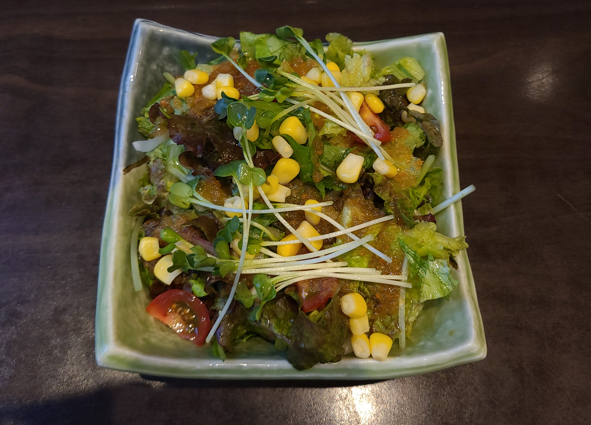
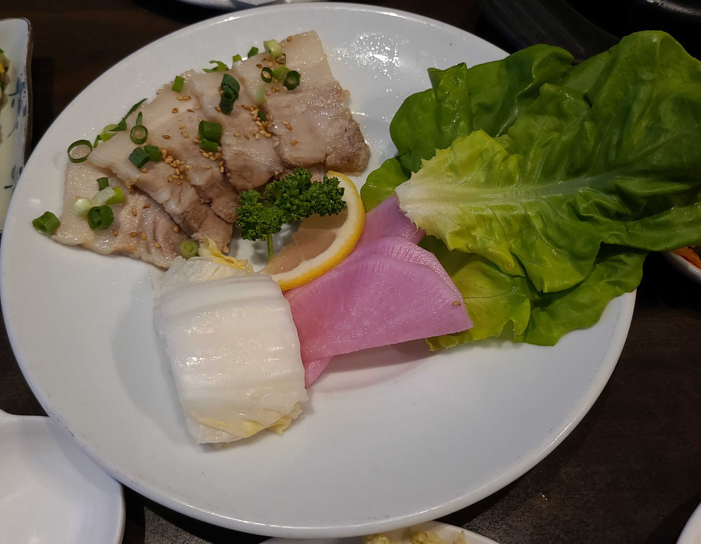
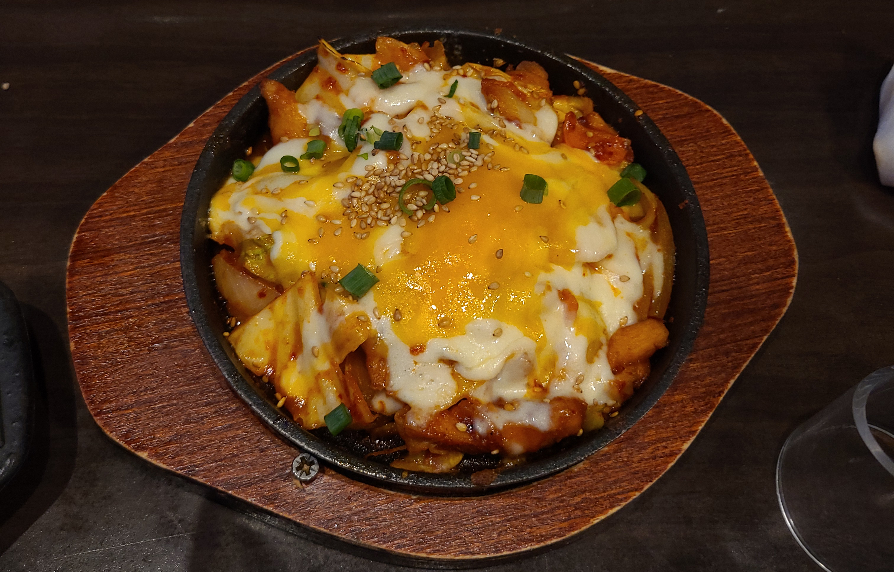
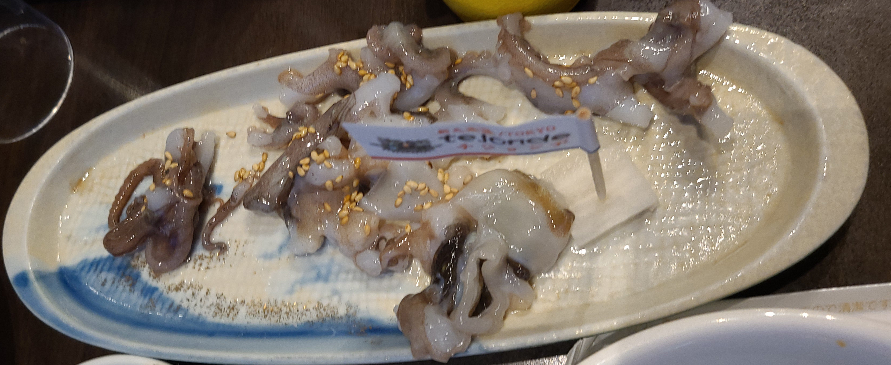

韓国海鮮専門店テジョンデ 基本情報
場所
- 住所
- 東京都 新宿区 百人町 1-6-15 Ｎ・Ｋビル ２Ｆ
- 交通手段
-
- 山手線新大久保駅より徒歩2分
- 中央線大久保駅より徒歩6分
- 西武新宿線西武新宿駅より徒歩9分
- 新大久保駅から96m
お店情報
型水槽から取り出した魚をその場でさばき、韓国スタイルのお刺身をご提供しています。人気の生イイダコ・サンナッチは、当店人気No1です。
高クオリティのカンジャンケジャンは驚きの旨さと評判です。
チヂミ、肉料理などバラエティー豊かなメニューを取り揃えております。
レビュー
今回は店舗でもNo１のコースで食べに行きました
2020年に某料理計YouTuberが動画にしている『カンジャンケジャン』がコースに入ってます。
『カンジャンケジャン』は手軽に作れるものでもないのでこれを食べれるだけでも行くかいはあります。
人気№１ Aコースのお品書き
- 新鮮オリジナルサラダ
- ヤンニョムケジャン（生カニ甘辛ダレ漬け）
- カンジャンケジャン（生カニ醤油漬け）
- カンジャンセウ（生海老醤油漬け）
- 海鮮チヂミ（韓国風お好み焼き）
- ゲランチム（韓国風茶碗蒸し）
- ポッサム（韓国肉料理）
- チーズダッカルビ
- 刺身盛合わせ～韓国風にサンチュで巻いて召し上がれ！～
- 今日のデザート
- 【番外編】生イイダコ・サンナッチ
料金
3,278円 (税込)
品の数にしては破格です。
新鮮オリジナルサラダ

普通のサラダという印象でした。
海鮮料理をこれから食べるのに邪魔にならない一品でした。
ヤンニョムケジャン（生カニ甘辛ダレ漬け）
カンジャンケジャン（生カニ醤油漬け）
カンジャンセウ（生海老醤油漬け）
.jpg)
今回のメインディッシュです
ケジョンはカニみそ部分がなしでしたが、それでも絶品でした。
食べ方は豪快に手掴みで、甲殻から身を押し出しすすり食べます。
カンジャンは醤油にしっかり漬かった蟹の身は柔らかく、醤油もただの醤油ではなく、尖がなく甘いものです。
しっかりと漬かっていても塩辛さを感じませんでした。
ヤンニョムのタレは程よい辛さに後味にタレと蟹の旨味が押し寄せて来ます。
こちらは韓国料理で良く食べる辛さだなと感じました。
セウ（生海老）はプリプリで味はケジャンという事もありカンジャンケジャンに似てますが、海老の甘味は甘エビに似たものを感じました。
海鮮チヂミ
写真忘れてしまいました…。
米に当たる立ち位置でした。
見た目はお好み焼きで海鮮の具がたっぷり入ってました。
ヤンニョムダレ二との相性抜群でした。
ゲランチム（韓国風茶碗蒸し）
写真忘れてしまいました…。
だし巻き卵と茶碗蒸しの合いの子といった感じの料理です。
フワフワな食感と卵の味がしっかりしており卵好きにたまりません。
ポッサム（韓国肉料理）
ゆでた豚をサンチュで巻くスタイルです。
好きな添え物と一緒に巻いて、テーブルに置かれているタレをつけて食べます。
韓国にはサンチュに色々なものを巻いて食べる文化があるみたいです。
チーズダッカルビ
辛いものが少し自分にとってはチーズなしでは食べられませんでした。
普通は鶏肉が入っているみたいですが、ここのは入ってなかったと思います。
また海老の出しを感じたと思います。
刺身盛合わせ～韓国風にサンチュで巻いて召し上がれ！～

写真でもわかる通り、白身魚が多いです。
サンチュで巻いて食べるんですが、サンチュの香りが強く、複数のお刺身を巻いて食べるのが良いかもしれません。
デザートのレビューは割愛、お口直しといった感じです
生イイダコ・サンナッチ
恐らく韓国海鮮専門店にでも行かない限り日本で食べることは難しいと思われます。
生きたタコの足がお皿を動き回っていてそれを捕まえるように食べます。
生きているため吸盤がお皿にくっついて食べるのが難しかったです。
食感はコリコリしており、茹でられたタコとは全く違いました。
ごま油と塩のタレで食べるのですが、これが絶品でした。こんなにごま油と塩のたれがタコに合うなんて思いませんでした。
総評 85/100
料理の運ばれて来るスピードはもちろん早く、待つのが苦手な人にもおすすめできます。
また料金に対してボリュームがとにかくすごかったです。
某料理系youtuberの影響でカンジャンケジャンに興味をもった方には是非足を運んでいただきたいお店でした。
コースだと量が多いと感じる人はケジャンを食べに行くだけでも良いかもしれません。
食べログのメニューを見ればわかりますが料理の品目もとにかく多いので席だけ予約するのは全然ありだと思います
広告
最後までブログをみていただいてケジャンやテジョンデに興味を持っていただけたら幸いです。